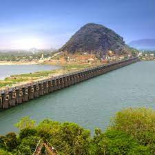
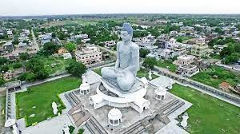

Unveiling the Enchanting Andhra Pradesh
A state where ancient temples meet vibrant culture and diverse landscapes
Geography and Nature
Andhra Pradesh boasts diverse landscapes, from the majestic Eastern Ghats and serene beaches to the fertile plains and vast plateaus. Explore the captivating Araku Valley nestled in the Eastern Ghats, witness the cascading beauty of Belum Caves, relax on the pristine beaches of Vizag, and marvel at the vastness of Nagarjuna Sagar.
History and Culture
Delve into the rich tapestry of Andhra Pradesh's history and culture, influenced by ancient empires, Buddhist heritage, and diverse regional traditions. Explore the architectural marvels of Tirupati Temple, delve into the historical ruins of Amaravati, and experience the vibrant dances and music unique to each region.
Cities and Towns
Discover the unique charm of Andhra Pradesh's cities and towns, each offering a distinct experience. Wander through the bustling streets and historical monuments of Hyderabad, explore the serene temples and cultural heritage of Vijayawada, and experience the coastal charm of Visakhapatnam.
Things to Do
Explore ancient wonders from Tirupati Temple to Amaravati ruins. Hike lush Araku Valley, relax on Vizag beaches, or spot wildlife in Nagarjuna Sagar National Park.